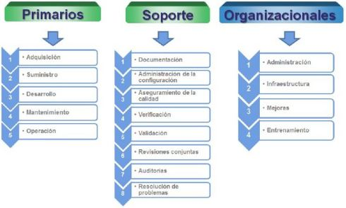

ISO 12207
Introduccion
El mercado del software representa uno de los ingresos económicos más significativos en el mundo,
ya que ofrece múltiples fuentes de negocio y es una gran oportunidad para los países que se
encuentran actualmente en vía de desarrollo.
Una vez que las organizaciones de software implementen herramientas para la mejora de sus procesos
podrán desarrollar productos de alta calidad, obteniendo un tiempo adecuado, costos competitivos,
actividades de operación y mantenimiento menos complejas y aumentar considerablemente la satisfacción
de los clientes y usuarios finales.
La Norma ISO 12207 se encarga de todo lo relacionado al ciclo de vida del software, desde la conceptualización
de ideas hasta la retirada y consta de procesos para la adquisición y suministro de proyectos y
servicios del software,estableciendo pautas para su control y mantenimiento.
Objetivos
El objetivo más importante de esta norma es proporcionar una estructura común para que los compradores, proveedores, desarrolladores, personal de mantenimiento, operadores, gestores y técnicos involucrados en el desarrollo de software utilicen un lenguaje en común.
Los objetivos de una empresa que busca la certificación con la norma ISO/IEC 12207:2008 son transportar a los clientes o socios la seguridad de que la empresa utiliza los procesos en relación con las prácticas de confianza de la industria. Además, los principios promovidos dentro de estas normas darán una plataforma sólida para administrar una solución de software desde sus inicios.

Características
Se derivan los procesos considerando:
-Modularidad del proceso: Un proceso individual se dedica solamente a una única función. Alta cohesión y bajo acoplamiento.-Responsabilidad del proceso: Un proceso individual es responsabilidad de una de las partes.
-Parte: Una organización (total o parcial) que entra en un contrato. La organización puede variar de una a muchas personas.
De Estructura
-Los procesos se organizan por actividades.-Las actividades se implementan a través de las tareas.
Una tarea es:
-Un conjunto elemental o atómico de acciones.-Una tarea consume entradas (datos, información, control) y produce salidas (datos, información, control).
Se consideran tres tipos de procesos:
-Principales-Soporte o Apoyo
-Organizacionales
Alcances
El alcance de la norma es establecer un marco de referencia común para los procesos del ciclo de vida del software. Contiene procesos, actividades y tareas para aplicar durante el suministro, desarrollo, operación y mantenimiento de productos de software. Los procesos son descritos en términos de lograr los propósitos y salidas.
Campos de aplicación
Es aplicable a la adquisición de sistemas, productos y servicios software, al suministro, desarrollo, operación y mantenimiento de productos software. Esta norma además esta creada para ser utilizada tanto por personas adquirientes de sistemas, productos y servicios de software, como para desarrolladores, operadores, responsables de mantenimiento, administradores, responsables de aseguramiento de calidad y usuarios finales.
La Norma ISO 12207 está dirigida principalmente a la calidad en variables del ciclo de vida y puede ser utilizada por:
-Una organización de software: Con el fin de ayudar a establecer un entorno de trabajo.-Un proyecto: Con el fin de ayudar a seleccionar una infraestructura y emplear todos los elementos que conforman un ciclo de vida de software establecido.
-Un comprador o proveedor: Para ayudar a desarrollar un acuerdo sobre los procesos y actividades que se vayan a manejar.
-Asesores: Con el fin de realizar evaluaciones que puedan servir de apoyo para mejorar los procesos de la organización.
Fases y Procesos
Esta norma agrupa las actividades que pueden llevarse a cabo durante el ciclo de vida del software en cinco procesos principales,
ocho procesos de apoyo y cuatro procesos organizativos.

Procesos Primarios
1.-Proceso de adquisición: Define las actividades del adquiriente, la organización que adquiere un sistema, producto de software o servicio de software.
2.-Proceso de suministro: Define las actividades del proveedor, organización que proporciona un sistema, producto de software o servicio de software al adquiriente.
3.-Proceso de desarrollo: El Proceso de Desarrollo contiene las actividades y tareas del desarrollador.
4.-Proceso de verificación: Define las actividades (para el adquiriente, proveedor o una parte independiente) para verificar hasta un nivel de detalle dependiente del proyecto software, los productos software.
5.- Proceso de validación: Define las actividades (para el adquiriente, proveedor o una parte independiente) para validar los productos software del proyecto software.
Procesos de Soporte
1.-Proceso de documentación: Define las actividades para el registro de la información producida por un proceso del ciclo de vida.
2.-Proceso de administración de la configuración: Define las actividades de la gestión de la configuración.
3.-Proceso de aseguramiento de la calidad: Define las actividades para asegurar, de una manera objetiva, que los productos software y los procesos son conformes a sus requisitos especificados y se ajustan a sus planes establecidos.
4.-Proceso de operación: Define las actividades del operador, organización que proporciona el servicio de operar un sistema informático en su entorno real, para sus usuarios.
5.-Proceso de mantenimiento: Define las actividades del responsable de mantenimiento, organización que proporciona el servicio de mantenimiento del producto software; esto es,
6.-Proceso de revisión conjunta: Define las actividades para evaluar el estado y productos de una actividad. Este proceso puede ser empleado por cualquiera de las dos partes, donde una de las partes (la revisora) revisa a la otra parte (la parte revisada), de una manera conjunta.
7.-Proceso de auditoría: Este proceso puede ser empleado por dos partes cuales quiera, donde una parte (la auditora) audita los productos software o actividades de otra parte (la auditada).
8.- Proceso de resolución de problemas: Define un proceso para analizar y eliminar los problemas (incluyendo las no conformidades) que sean descubiertos durante la ejecución del proceso de desarrollo, operación, mantenimiento u otros procesos, cualquiera que sea su naturaleza o causa.
Procesos Organizacionales
1.-Proceso de gestión: Define las actividades básicas de gestión, incluyendo la gestión de proyectos, durante un proceso del ciclo de vida.
2.-Proceso de infraestructura: Define las actividades básicas para establecer la infraestructura de un proceso del ciclo de vida.
3.- Proceso de mejora: Define las actividades básicas que una organización (adquiriente, proveedor, desarrollador, operador, responsable de mantenimiento o gestor de otro proceso) lleva a cabo para establecer, medir, controlar y mejorar su proceso del ciclo de vida.
4.-Proceso de entrenamiento: Define las actividades básicas para conseguir personal adecuadamente formado.
Beneficios
- Implica a la gente para mejorar su ambiente laboral y su relación con el usuario final.
- Permite localizar las áreas prioritarias de la empresa y focalizar en ellas los recursos.
- Educa al personal de la empresa en los conceptos fundamentales.
- Facilita la comparación con otras organizaciones entre pares, facilitando el proceso de compartir buenas prácticas entre ellos.